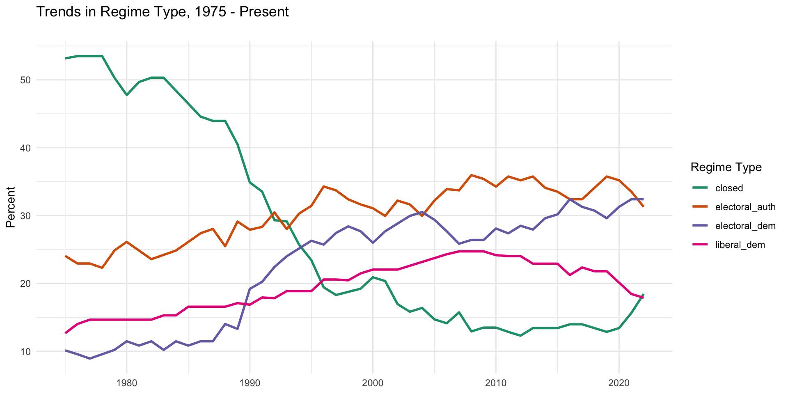

Lecture 3.1
Democratic Backsliding
What is Backsliding
Regime Types
- Democracies
- Free and fair elections
- Protection of civil liberties
- Hybrid regimes (illiberal, semi-authoritarian)
- Elections, degree of fairness in question
- More restricted civil liberties
- Authoritarian regimes
- No elections, or rigged elections
- No basic rights and liberties
Regime Type Trends
Examples

Common Mechanisms
- Constitutional amendments to enhance executive authority
- Elimination of checks and balances, reduction of accountability
- Centralization of executive power through purges
- Intimidation of media and civil society
- Elimination of political competition
- attacks on competitors
- rigged elections
Methods of Backsliding (Bormeo)
- Old Way
- Open-ended coups
- Executive coups
- Vote fraud
- New Way
- Promissory coups
- Executive aggrandizement
- Strategic harassment and manipulation
Discussion
U.S. in Comparative Perspective
- Kaufman and Haggard reading
- How has backsliding occurred in middle-income countries?
- How similar is the U.S. to these countries?
- Is electoral authoritarianism possible in the U.S.?
Theories of Backsliding
Hypotheses (1/3)
- Leadership
- State strength and autonomy (how leaders create it)
- Role of elites in negotiating transitions, dividing power
- Culture
- Civic culture
- Social capital and education
Hypotheses (2/3)
- Specific types of political institutions
- Presidential vs. parliamentary systems
- Consociationalism (for divided societies)
- Electoral institutions
- PR vs SMD
- If PR type of lists
- Party fragmentation and instability (e.g. Indonesia)
- International factors
- International orgs (foreign aid, election monitoring, etc.)
- Alliances (who are your friends?)
Hypotheses (3/3)
- Social structures
- Class (bourgeoisie, working class, etc.)
- Ethnic fragmentation
- Relevance of economic and political exclusion
- Economic factors (see below)
Political Economy of Backsliding
Wealth
- Exogenous Democratization
- Rising wealth makes backsliding less likely
- “No democracy was ever subverted in a country with a per capita income higher than Argentina in 1975: $6,055” (Przeworski)
Inequality
- “Redistributivist” theory
- Democracy is more durable in egalitarian societies
- When the poor demand redistribution of elite’s wealth, elites react by “digging in their heels” because redistribution would be too drastic (Acemoglu and Robinson 2006)
- Demands for redistribution are less in societies with lower inequality and societies where assets of elites are mobile (Boix
- Competition from rising elites (Ansell and Samuels 2014)
Macroeconomic Performance
- Literature especially focused on growth and inflation (Kapstein and Converse)
- High growth rates \(\rightarrow\) less risk of backsliding
- High inflation increases risk
- Arguably more about regime stability than democracy
- Applies equally well to authoritarian regimes
- High performing autocracies likely to survive
- “Performance legitimacy”, e.g. China
Natural resource wealth
- Undermines democracy
- Promotes authoritarianism
- Focus of next week’s discussion
Exercise
Group Exercise
Interactive Map Tool
- One variable multiple countries
- Look at electoral democracy and one other variable
Variable Graph
- One variable, compare two countries
- Zoom in on one country from the map
Country Graph
- One country, multiple variables
- Start with electoral democracy and expand
** What interesting patterns/questions arise?